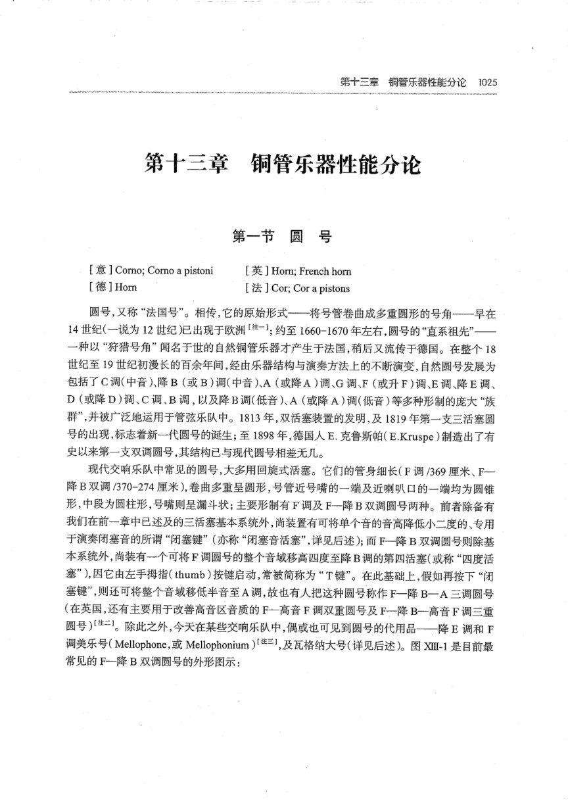

PDF 第 3 页
杨立青下 · 印刷 p.1025 · 第十三章 铜管乐器性能分论 · 圆号
第十三章铜管乐器性能分论1025
第十三章铜管乐器性能分论
第一节圆号
[意］Corno; Corno a pistoni
[英］Horn;French horn
[德]Hom
[法]Cor;Cor apistons
圆号，又称“法国号”。相传，它的原始形式一—将号管卷曲成多重圆形的号角一一早在
14世纪（一说为12世纪）已出现于欧洲【注-1；约至1660-1670年左右，圆号的“直系祖先”—
一种以“狩猎号角”闻名于世的自然铜管乐器才产生于法国，稍后又流传于德国。在整个18
世纪至19世纪初漫长的百余年间，经由乐器结构与演奏方法上的不断演变，自然圆号发展为
包括了C调(中音）降B（或B)调(中音）A（或降A)调、G调、F（或升F)调、E调、降E调、
D（或降D)调、C调、B调，以及降B调(低音）A（或降A）调(低音）等多种形制的庞大“族
群”，并被广泛地运用于管弦乐队中。1813年，双活塞装置的发明，及1819年第一支三活塞圆
号的出现，标志着新一代圆号的诞生；至1898年，德国人E.克鲁斯帕（E.Kruspe）制造出了有
史以来第一支双调圆号，其结构已与现代圆号相差无几。
现代交响乐队中常见的圆号，大多用回旋式活塞。它们的管身细长（F调/369厘米、F一
降B双调/370-274厘米），卷曲多重呈圆形，号管近号嘴的一端及近喇叭口的一端均为圆锥
形，中段为圆柱形，号嘴则呈漏斗状；主要形制有F调及F一降B双调圆号两种。前者除备有
我们在前一章中已述及的三活塞基本系统外，尚装置有可将单个音的音高降低小二度的、专用
于演奏闭塞音的所谓“闭塞键”（亦称“闭塞音活塞”，详见后述）；而F一降B双调圆号则除基
本系统外，尚装有一个可将F调圆号的整个音域移高四度至降B调的第四活塞（或称“四度活
塞”)，因它由左手拇指（thumb）按键启动，常被简称为“T键”。在此基础上，假如再按下“闭
塞键”，则还可将整个音域移低半音至A调，故也有人把这种圆号称作F一降B一A三调圆号
（在英国，还有主要用于改善高音区音质的F一高音F调双重圆号及F—降B一高音F调三重
圆号)[注二。除此之外，今天在某些交响乐队中，偶或也可见到圆号的代用品一—降E调和F
调美乐号（Mellophone,或Mellophonium）[三1,及瓦格纳大号（详见后述）。图Xm-1是目前最
常见的F一降B双调圆号的外形图示：